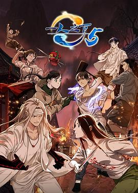

雷大力（黄渤 饰）为了让儿子雷小米（单禹豪 饰）能够拥有更高的人生起点，在单亲妈妈刘真真（闫妮 饰）的带领下，被迫卷入了“幼升小”的激烈角逐。又在火哥（张子贤 饰）和火嫂（万茜 饰）的影响下，不惜倾尽所有购入学区房，重重压力让父子二人的生活变得不堪一击。雷小米小姨（张钧甯 饰）的出现，又让雷大力领悟了“拼娃”的本质是“拼父母”……面对残酷的现实，父子的生活困境应该如何破局？几组家庭又将做出怎样的人生抉择？
艾美奖获奖动画选集《爱、死亡 & 机器人》第三部回归，由蒂姆·米勒（《死侍》《终结者：黑暗命运》）和大卫·芬奇（《心灵猎人》《曼克》）担任监制。恐怖、想象力和美在新剧集中完美融合，从揭示古老的邪恶力量到喜剧般的末日，剧集以标志性的巧思和创造性的视觉效果，为观众带来令人震惊的奇幻、恐怖和科幻短篇故事。
哈利波特结束了假期，即将回到霍格沃兹继续学习魔bbb。一个叫多比的家养小精灵警告哈利不要回到霍格沃兹，否则会陷入极大的危险。哈利没有听从多比的劝告，回到了霍格沃兹。很快，霍格沃兹发生了一连窜怪事接二连三出现学生被石化，一直找不出原因。而哈利总能听到一种奇怪的声音，从墙壁里传出来。传说，霍格沃兹有一个密室，里面记录着伏地魔年轻时的秘密，只有斯莱特林的人才能打开密室。哈利偶然发现自己能听懂蛇说话，一时传闻是哈利打开了密室。难道多比所指的危险就隐藏在密室？
该剧改编自猫腻同名畅销小说，承接上季，范闲（张若昀 饰）率领使团回归途中，二皇子以费介、范思辙以及滕家遗孤的安危来威胁范闲，逼他向自己俯首称臣，二人的矛盾就此激发。范闲所面对的抱月楼迷局，以及接踵而至的春闱危机，都是二皇子精心给范闲布下的陷阱。
范闲与林婉儿如愿大婚，紧接着，范闲接手内库，却发现内库负债累累。 范闲拒绝了庆余堂大掌柜的相助，决定靠自己的力量解决内库危机，范闲相约城中众商贾相聚苍山，以售卖“库债”为机筹集了两千多万银两，解决了内库空虚问题。
悬空寺上，庆帝遭遇三连刺杀，范闲出手相救却导致武功全废。危机四伏，压力陡增，范闲别无选择，他必须以这样的身体下江南，挑战庞大的势力与既定的游戏规则，以求彻底夺回内库。
三边坡，一处鱼龙混杂的热带异域，一个繁茂与衰败并生的斑驳之地。意外流落三边坡的打工小白沈星（郭麒麟 饰）遇到在多方势力间游走的三边坡和事佬猜叔（吴镇宇 饰），一场冒险，一段善良微光指引下的回归，在留与逃的挣扎中将如何上演。
故事发生在变形金刚的母星塞伯坦，聚焦变形金刚的青年时代，讲述汽车人领袖擎天柱（克里斯·海姆斯沃斯 Chris Hemsworth 配音）与霸天虎领袖威震天（布莱恩·泰里·亨利 Brian Tyree Henry 配音）从手足走向反目的故事，打响旷日持久的塞伯坦之战。
做生意的女强人顶姐因签错文件入狱，一开始就与狱中的前辈波嫂发生冲突，又不喜监狱管理制度，被人孤立。凯莉主动帮助她适应新环境，更因此结识了为人善良，心系女儿又照顾狱中姐妹的博妈。 为解决狱中卫生巾不足的问题，顶姐发挥做生意的头脑、与博妈利用各工队协助的力量，尽力为狱友们解决问题，并协力维护和平的女监环境，顶姐更因此赢得了大家的欢迎。但没想到，女监恶霸劏猪环再度入狱，马上破坏了监狱的和谐。为了成为狱中老大，劏猪环设局陷害顶姐和波嫂，令原本对立的二人被罚独立囚禁一星期。两人于这期间难得地交心言谈，拉近了彼此的距离并成为知心好友。 博妈即将出狱，却意外发现女儿波波入狱。波波埋怨博妈多年没尽到母亲的责任，不愿与博妈亲近，博妈悲痛万分。在一次劏猪环责难波波泄愤期间，博妈为了保护波波而去世。此举激怒了波波和众人，她们决心共同抵制劏猪环、让监狱回到往日的和平与宁静。...

现代姑娘连蔓儿乱入古代农村，遇见了神秘的年轻男子沈诺，二人携手斗极品亲戚，种田经营，发家致富，也渐渐相知相爱。最终，连蔓儿得知了沈诺的真实身份，面对巨大的挑战，二人的感情将何去何从……
雷大力（黄渤 饰）为了让儿子雷小米（单禹豪 饰）能够拥有更高的人生起点，在单亲妈妈刘真真（闫妮 饰）的带领下，被迫卷入了“幼升小”的激烈角逐。又在火哥（张子贤 饰）和火嫂（万茜 饰）的影响下，不惜倾尽所有购入学区房，重重压力让父子二人的生活变得不堪一击。雷小米小姨（张钧甯 饰）的出现，又让雷大力领悟了“拼娃”的本质是“拼父母”……面对残酷的现实，父子的生活困境应该如何破局？几组家庭又将做出怎样的人生抉择？
艾美奖获奖动画选集《爱、死亡 & 机器人》第三部回归，由蒂姆·米勒（《死侍》《终结者：黑暗命运》）和大卫·芬奇（《心灵猎人》《曼克》）担任监制。恐怖、想象力和美在新剧集中完美融合，从揭示古老的邪恶力量到喜剧般的末日，剧集以标志性的巧思和创造性的视觉效果，为观众带来令人震惊的奇幻、恐怖和科幻短篇故事。
哈利波特结束了假期，即将回到霍格沃兹继续学习魔bbb。一个叫多比的家养小精灵警告哈利不要回到霍格沃兹，否则会陷入极大的危险。哈利没有听从多比的劝告，回到了霍格沃兹。很快，霍格沃兹发生了一连窜怪事接二连三出现学生被石化，一直找不出原因。而哈利总能听到一种奇怪的声音，从墙壁里传出来。传说，霍格沃兹有一个密室，里面记录着伏地魔年轻时的秘密，只有斯莱特林的人才能打开密室。哈利偶然发现自己能听懂蛇说话，一时传闻是哈利打开了密室。难道多比所指的危险就隐藏在密室？

碧游村大门总为你敞开，陈朵的故事会如何发展，尽请期待《一人之下 第五季》。

该剧改编自作家李娟同名作品。生长在阿勒泰的汉族少女李文秀（周依然 饰）一心在大城市中追求文学梦想，却屡屡碰壁被迫回到老家与开小卖部的母亲（马伊琍 饰）相依为命。在结识哈萨克少年巴太（于适 饰）之后，文秀渐渐发现了当地之美。
该剧改编自猫腻同名畅销小说，承接上季，范闲（张若昀 饰）率领使团回归途中，二皇子以费介、范思辙以及滕家遗孤的安危来威胁范闲，逼他向自己俯首称臣，二人的矛盾就此激发。范闲所面对的抱月楼迷局，以及接踵而至的春闱危机，都是二皇子精心给范闲布下的陷阱。
范闲与林婉儿如愿大婚，紧接着，范闲接手内库，却发现内库负债累累。 范闲拒绝了庆余堂大掌柜的相助，决定靠自己的力量解决内库危机，范闲相约城中众商贾相聚苍山，以售卖“库债”为机筹集了两千多万银两，解决了内库空虚问题。
悬空寺上，庆帝遭遇三连刺杀，范闲出手相救却导致武功全废。危机四伏，压力陡增，范闲别无选择，他必须以这样的身体下江南，挑战庞大的势力与既定的游戏规则，以求彻底夺回内库。
没有公民身份证的阿邦和阿迪，在混杂外劳聚居的富都老社区里苟且偷生。他们无法享有一般国民福利，无法申请护照，连银行户头也开不了。哥哥阿邦天生哑巴，任劳任怨也认命，只求一份安定生活，弟弟阿迪则不甘向命运低头，从而违法贩卖假证件，他一心只想赚到钱就带着哥哥离开这个厌恶的地方。原本就过着不平等生活的两人，因为社工佳恩的热心，并自愿协助追查原生父母和出生证明的数据，但她的好意却导致一场意外发生，同时也让阿邦跟阿迪再次陷入水深火热的命途。
公元712年，唐睿宗改元延和，大唐依旧繁盛寰宇，但繁华之下依然危机四伏、山雨欲来。一股股势力借机点点欲动，更引起民间诡案频发，大理寺少卿卢凌风（杨旭文 饰）和乾陵丞苏无名（杨志刚 饰）又将遇到怎样的志怪谜局？西行之路，境遇难测。
镇西侯府小公子百里东君自幼顽劣，不好诗书不读兵法不学武艺，却独好酿酒，只因和年少时被害的好友叶云有过一个要成为“酒仙”的约定。但是他的命运却由不得他选择，最终还是拜入了天下第一李长生的门下，开始学习武艺。并且在此过程中结识了红颜知己玥瑶，重逢了已经改名为叶鼎之的叶云。在他们的影响和激励下，百里东君开始重新审视自己的身份和应当承担的责任。多年之后，叶鼎之遭人利用，发起了一场讨伐中原的战争。而百里东君则率领一众天下英雄进行抵抗。面对最好的兄弟，此时的百里东君并没有退缩，他既要救下这苍生，亦要拯救自己的兄弟。

苏州顾家子弟顾易中（曾舜晞 饰）从宾夕法尼亚大学建筑系学成回国，抗战爆发后，在一次协助地下党女友的营救行动失败后，苏州地下组织联络点也全部暴露。顾易中因日伪故意栽赃陷害被误认为是党内叛徒，在无法自证清白的情况下，他主动潜入日伪，几经周折后终于成为我党在苏州特工站中的一名潜伏人员。顾易中面顶着巨大压力，与苏州特工站站长周知非（张颂文 饰）和日军顾问近藤利男斗智斗勇，乘机找出了党内真正的叛徒“黑八”并将其除去。顾易中持续不断地为我党秘密搜集情报，多次救党内同志于危难之中，为我党苏州地下组织的抗日救国运动提供了巨大支持和帮助。他以坚定不移的信仰奋勇向前，在斗争中不断成长。
三边坡，一处鱼龙混杂的热带异域，一个繁茂与衰败并生的斑驳之地。意外流落三边坡的打工小白沈星（郭麒麟 饰）遇到在多方势力间游走的三边坡和事佬猜叔（吴镇宇 饰），一场冒险，一段善良微光指引下的回归，在留与逃的挣扎中将如何上演。
根据50岁阿姨自驾游真人故事改编。
天真浪漫的李红（咏梅 饰）一生有过许多梦想，18岁时憧憬大学，25岁时憧憬爱情，45岁时憧憬远游……但为了那些“对别人来说更重要”的事，她只能一等再等，也一再错过。50岁，她决心不再等待，活出不一样的人生！
该剧改编自狂上加狂的小说《藏娇》。讲述了处心积虑的腹黑王爷崔行舟（张晚意 饰）和聪明狡黠女寨主柳眠棠（王楚然 饰）“猫鼠斗爱”的故事。担纲剿灭仰山山患重任的崔行舟阴差阳错救下了从未谋面却实为劲敌的柳眠棠，并误以为其是仰山头领的宠妾。重伤苏醒后失去部分记忆的柳眠棠把崔行舟错认为“夫君”崔九，崔行舟将计就计化身郁郁不得志的落魄商户崔九，与她假扮夫妻。谁料虽因失忆为内妇，柳眠棠却凭借过人的胆识和才智开了一家瓷器店，生意甚是红火，崔行舟因其经商能力对她刮目相看，日渐生情。与此同时柳眠棠慢慢发现崔九可能身上藏着不为人知的秘密，在“骗局”拆穿的情感危机后，二人最终坦诚相待，互许终身。

知名编剧苏离和当红演员张书恒之间的甜蜜婚姻令人称羡，但是这看似坚固的幸福却在苏离收到一条匿名信息，告诉她张书恒出轨开始，逐渐出现裂缝。随着不断深入调查，苏离最终确定了老公出轨的事实，并且发现出轨的对象竟然是自己多年的闺蜜。面对友情和爱情的双双背叛，苏离痛苦不 堪。敢爰敢恨、冷静容智的苏离，当机立断决定马上离婚，但是在询问律师后，发现张书恒名下因为之前投资失败几乎没有什么资产，如果离婚，苏离还要把自己的一半身家分给张书恒。无法接受的苏离决定在准备好一切离婚手续之前假装自己不知情，暂缓离婚，但又咽不下这口气，偷偷开始了对老公和闺蜜的报复。在报仇过程中，苏离找出了给自己发匿名信息的人，张书恒的女助理王刚刚。相处过程中，同样不幸福的婚姻让两人惺惺相惜，在互帮互助的过程中，两人的友情也越来越坚固。
该剧以雍国外交机构“四方馆”为背景，讲述身处这一片小小天地中的元莫（檀健次 饰）、阿术（周依然 饰）、王昆吾（杜淳 饰）、尉迟华（阚清子 饰）等四方志士胸怀理想，为家国和正义勇敢奔赴、砥砺前行的故事。
出身泰国华人家庭的无业年轻人阿安（马群耀 饰）看到堂妹因照顾病重的爷爷而继承房产后，也对身患绝症的姥姥（乌萨·萨梅坎姆 饰）动了心思，计划复刻堂妹的“致富之路”获取百万遗产。但面对同样“努力”的舅舅们和挑剔毒舌的姥姥，阿安这条争当全职孝孙的“啃姥致富”之路似乎没有他预想的那么顺利……
该剧讲述了三对30岁、40岁的夫妻或情侣在快节奏的大环境下，被生活围追堵截，努力自救，从而实现各自人生价值的故事。当了五年全职主妇的沈琳（殷桃 饰）遭遇丈夫那伟（王骁 饰）失业，夫妻双双无业，二胎嗷嗷待哺，房贷月月逼近，沈琳回归职场之路频频碰壁之后，选择变身个体户实现再就业；名校毕业的沈磊（秦俊杰 饰），考了公务员，在单位档案科工作，岁月静好，与世无争，妻子谢美蓝（陈昊宇 饰）却因他安于现状与之离婚，沈磊信念崩塌，辞去工作，离家出走；百万年薪的程序员那隽（张哲华 饰）被大厂齿轮裹挟前进，因高强度的工作患了惊恐症，为怕失业拼命掩饰，让以及时行乐为人生态度的女友李晓悦（章若楠 饰）难以理解，彼此相爱的两人渐行渐远。面对各自的人生窘境，他们不控诉不自怜，直面内心，共渡人生危机。
初中女生惠君（徐娇 饰）长期遭校园霸凌高处坠亡，暴行非但没有停止，甚至祸延到闺蜜小彤（王圣迪 饰）身上。然而，霸凌者也接连殒命于重锤之下。在连环杀人案的背后，难脱嫌疑的众人逐一浮出水面：小彤的母亲（张钧甯 饰）目睹女儿被胶水封嘴却闭口不言，校工林在福看似知晓内情却冷漠疏离，暗中窥探的神秘男吴望（黄明昊 饰）看似身陷险境却面露笑容……杀害霸凌者的雨夜屠夫究竟是他们其中的何人？调查案件的警官戴国栋（吴镇宇 饰）似乎被假象蒙蔽，探秘过程中，宗宗藏污纳垢的旧事被揭开，所有人都被推到了风口浪尖。善恶有报罪恶难逃，真相即将揭晓……
本剧改编自南派三叔同名小说《藏海花》。讲述了《盗墓笔记》故事后，吴邪和王胖子因缘际会下前往雪山，探寻张起灵神秘身世，过程中与张家兄妹张海杏、张海客斗智斗勇，并卷入一场前所未见的阴谋中。一场浪漫彼岸的冒险由此拉开帷幕……
该剧根据“七一勋章”获得者张桂梅事迹改编。
张桂梅（宋佳 饰）是中国西部山区的一名普通中学女教师，多年间她不断目睹自己的女学生因家庭贫穷而辍学，在15、16岁的年纪或嫁人生子、或外出打工，这让张桂梅无比痛心和惋惜。她立志要办一所全免费的女子高中，让这些大山里的女孩获得受教育的机会、能够考上大学、走出大山，彻底改变 命运。2008年，全中国唯一一所全免费的女子高中成立，在没老师、没学生、没经费、没经验的重重困境下，张桂梅带领女高师生们完成了不可能的任务：让学习基础极度落后的女高学生们，全部考上了大学。这所女子高中让一批批女孩走出了大山，改变了命运。然而随着学校的发展，越来越多大山里贫困女生前来报考，新的问题和困难也随之而来……
该剧改编自豆瓣阅读长篇小说《这里没有善男信女》，作者柳翠虎。讲述了当下年轻人在寻爱寻己的都市生活中，无惧跌倒和失败，最终收获不同成长的故事。
崔大路（肖央 饰）、李红樱（赵丽颖 饰）、赵子山（刘烨 饰），三位丢了孩子的父母因一桩交易而彼此牵连；他们眼里没魂儿，心中有恨，各怀目的，组局踏上寻子复仇之路，在蛮荒之地上演一场离奇又凶险的绝杀。
影片聚焦铁原阻击战。1951年5月，中国人民志愿军第63军刚刚结束了持续一个月的作战，就受命进驻铁原战场，正面对抗“联合国军”4个师。志愿军将士们浴血奋战，终于把敌军打上了谈判桌。
为了完成任务，63军189师的战士化整为零，把自己变成一根钉子，牢牢钉在阵地上。
1营阵地上，身为营教导员的李想（朱一龙 饰）立下“一步也不会再退”的誓言，死守阵地。
炮火连天中，李默尹（辛柏青 饰）一家三口在战场上团聚，一把钥匙，一顿战壕中的团圆饭，让这个因战争分离的小家更为亲密。
为了给新中国造出更好的武器，归国军工专家吴本正（朱亚文 饰）在张孝恒（欧豪 饰）的保护下进入战场。身为警卫员的张孝恒坚信，守住了吴本正，就是守住了祖国的未来。
孙醒（陈飞宇 饰）、杨三弟（张宥浩 饰）也纷纷来到铁原。63军全体将士一起，在铁原战场上筑成了一道冲不破的“铁长城”！
边陲小镇长大的乔妍（赵丽颖 饰）打拼多年之后成为了一名知名演员，但在重重压力之下，一路走来小心翼翼。随着一条匿名的勒索消息，让一桩尘封往事成为她新的阴影。同时，多年前失联的姐姐（辛芷蕾 饰）突然现身，事情看似巧合，但背后又暗藏更大的危机。
影片改编自张悦然的小说《大乔小乔》。
毒液和埃迪（汤姆·哈迪 Tom Hardy 饰）迎来至暗时刻。一边是人类神秘组织的穷追猛打，一边是外星共生体大军入侵地球，他们一心同体，花式解锁海陆空作战新形态。面对两边的疯狂追捕，这对亡命搭档将被迫做出毁灭性决定，为他们的最后一舞拉下帷幕。
南宋临安，小白五百年后终于觅得阿宣的转世—许仙，二人断桥相遇。小白小青隐身街巷，和许仙还有姐夫李公甫一起开始了人间的热闹生活。却不想杭州城中突发怪事，金山寺法海除妖而来，意外揭开了小白和小青的蛇妖身份，许仙惊恐目睹小白化身巨蟒……浮生中这一场生死情劫，许仙值得吗？
影片时间线设定在1979年第一部《异形》与1986年的续集《异形2》之间，围绕一群年轻而勇敢的太空殖民者展开。讲述他们为逃离外星采矿殖民地的沉闷生活，在冒险探索一座废弃的太空站时，意外遭遇了宇宙中最可怕的生命体——异形。狭窄幽暗、危机四伏的空间站中，大逃杀的序幕已经被无情拉开，人类再次成为异形生物捕猎的目标。在无尽的黑暗与死亡威胁的笼罩之下，太空探险队员们能否在每一次心跳的瞬间，察觉到未知生物潜伏的丝丝寒意？在这场你死我活的追逐战中，他们将直面怎样的信任挑战和道德挣扎？当一个又一个同伴被残忍吞噬，求救无门的他们究竟能否在这场太空杀戮中寻得一线生机？
“这是航班HY688，我们遭遇劫机！劫匪要价35亿人民币！目前飞机处于失控状态，请求支援！！！”一架五星级超豪华A380客机在国际首航途中遭遇暴力劫机，整架飞机被杀意笼罩。机舱内，国际安保专家高皓军（刘德华 饰）正在和疯批悍匪团周旋，他的女儿小军（张子枫 饰）被绑为人质，性命岌岌可危。劫匪头目Mike（屈楚萧 饰）要价35亿人民币，全机乘客沦为他的筹码和玩具。女儿和前妻傅源（刘涛 饰）先后落入魔爪，暴躁杀神高晧军开启极限反杀模式，一场高空追杀就此展开。此时机舱内已是浓烟滚滚，坠机只是时间问题！全机乘客能否安全降落，这架摇摇欲坠的豪华客机究竟是最后的栖身之所还是坠入地狱的幽灵航班？
公告
上一条
下一条
变形金刚：起源
HD人工中字
故事发生在变形金刚的母星塞伯坦，聚焦变形金刚的青年时代，讲述汽车人领袖擎天柱（克里斯·海姆斯沃斯 Chris Hemsworth 配音）与霸天虎领袖威震天（布莱恩·泰里·亨利 Brian Tyree Henry 配音）从手足走向反目的故事，打响旷日持久的塞伯坦之战。
女囚风暴1995未删减版
HD
做生意的女强人顶姐因签错文件入狱，一开始就与狱中的前辈波嫂发生冲突，又不喜监狱管理制度，被人孤立。凯莉主动帮助她适应新环境，更因此结识了为人善良，心系女儿又照顾狱中姐妹的博妈。 为解决狱中卫生巾不足的问题，顶姐发挥做生意的头脑、与博妈利用各工队协助的力量，尽力为狱友们解决问题，并协力维护和平的女监环境，顶姐更因此赢得了大家的欢迎。但没想到，女监恶霸劏猪环再度入狱，马上破坏了监狱的和谐。为了成为狱中老大，劏猪环设局陷害顶姐和波嫂，令原本对立的二人被罚独立囚禁一星期。两人于这期间难得地交心言谈，拉近了彼此的距离并成为知心好友。 博妈即将出狱，却意外发现女儿波波入狱。波波埋怨博妈多年没尽到母亲的责任，不愿与博妈亲近，博妈悲痛万分。在一次劏猪环责难波波泄愤期间，博妈为了保护波波而去世。此举激怒了波波和众人，她们决心共同抵制劏猪环、让监狱回到往日的和平与宁静。...
田耕纪
全26集
现代姑娘连蔓儿乱入古代农村，遇见了神秘的年轻男子沈诺，二人携手斗极品亲戚，种田经营，发家致富，也渐渐相知相爱。最终，连蔓儿得知了沈诺的真实身份，面对巨大的挑战，二人的感情将何去何从……
学爸
HD
雷大力（黄渤 饰）为了让儿子雷小米（单禹豪 饰）能够拥有更高的人生起点，在单亲妈妈刘真真（闫妮 饰）的带领下，被迫卷入了“幼升小”的激烈角逐。又在火哥（张子贤 饰）和火嫂（万茜 饰）的影响下，不惜倾尽所有购入学区房，重重压力让父子二人的生活变得不堪一击。雷小米小姨（张钧甯 饰）的出现，又让雷大力领悟了“拼娃”的本质是“拼父母”……面对残酷的现实，父子的生活困境应该如何破局？几组家庭又将做出怎样的人生抉择？
爱，死亡和机器人第三季
完结
艾美奖获奖动画选集《爱、死亡 & 机器人》第三部回归，由蒂姆·米勒（《死侍》《终结者：黑暗命运》）和大卫·芬奇（《心灵猎人》《曼克》）担任监制。恐怖、想象力和美在新剧集中完美融合，从揭示古老的邪恶力量到喜剧般的末日，剧集以标志性的巧思和创造性的视觉效果，为观众带来令人震惊的奇幻、恐怖和科幻短篇故事。
哈利波特2：哈利波特与密室
高清
哈利波特结束了假期，即将回到霍格沃兹继续学习魔bbb。一个叫多比的家养小精灵警告哈利不要回到霍格沃兹，否则会陷入极大的危险。哈利没有听从多比的劝告，回到了霍格沃兹。很快，霍格沃兹发生了一连窜怪事接二连三出现学生被石化，一直找不出原因。而哈利总能听到一种奇怪的声音，从墙壁里传出来。传说，霍格沃兹有一个密室，里面记录着伏地魔年轻时的秘密，只有斯莱特林的人才能打开密室。哈利偶然发现自己能听懂蛇说话，一时传闻是哈利打开了密室。难道多比所指的危险就隐藏在密室？
我的阿勒泰
全08集
该剧改编自作家李娟同名作品。生长在阿勒泰的汉族少女李文秀（周依然 饰）一心在大城市中追求文学梦想，却屡屡碰壁被迫回到老家与开小卖部的母亲（马伊琍 饰）相依为命。在结识哈萨克少年巴太（于适 饰）之后，文秀渐渐发现了当地之美。
庆余年第二季
全36集
该剧改编自猫腻同名畅销小说，承接上季，范闲（张若昀 饰）率领使团回归途中，二皇子以费介、范思辙以及滕家遗孤的安危来威胁范闲，逼他向自己俯首称臣，二人的矛盾就此激发。范闲所面对的抱月楼迷局，以及接踵而至的春闱危机，都是二皇子精心给范闲布下的陷阱。
范闲与林婉儿如愿大婚，紧接着，范闲接手内库，却发现内库负债累累。 范闲拒绝了庆余堂大掌柜的相助，决定靠自己的力量解决内库危机，范闲相约城中众商贾相聚苍山，以售卖“库债”为机筹集了两千多万银两，解决了内库空虚问题。
悬空寺上，庆帝遭遇三连刺杀，范闲出手相救却导致武功全废。危机四伏，压力陡增，范闲别无选择，他必须以这样的身体下江南，挑战庞大的势力与既定的游戏规则，以求彻底夺回内库。
富都青年
HD
没有公民身份证的阿邦和阿迪，在混杂外劳聚居的富都老社区里苟且偷生。他们无法享有一般国民福利，无法申请护照，连银行户头也开不了。哥哥阿邦天生哑巴，任劳任怨也认命，只求一份安定生活，弟弟阿迪则不甘向命运低头，从而违法贩卖假证件，他一心只想赚到钱就带着哥哥离开这个厌恶的地方。原本就过着不平等生活的两人，因为社工佳恩的热心，并自愿协助追查原生父母和出生证明的数据，但她的好意却导致一场意外发生，同时也让阿邦跟阿迪再次陷入水深火热的命途。
唐朝诡事录之西行
全40集+彩蛋+花絮
公元712年，唐睿宗改元延和，大唐依旧繁盛寰宇，但繁华之下依然危机四伏、山雨欲来。一股股势力借机点点欲动，更引起民间诡案频发，大理寺少卿卢凌风（杨旭文 饰）和乾陵丞苏无名（杨志刚 饰）又将遇到怎样的志怪谜局？西行之路，境遇难测。
少年白马醉春风剧场版
全40集
镇西侯府小公子百里东君自幼顽劣，不好诗书不读兵法不学武艺，却独好酿酒，只因和年少时被害的好友叶云有过一个要成为“酒仙”的约定。但是他的命运却由不得他选择，最终还是拜入了天下第一李长生的门下，开始学习武艺。并且在此过程中结识了红颜知己玥瑶，重逢了已经改名为叶鼎之的叶云。在他们的影响和激励下，百里东君开始重新审视自己的身份和应当承担的责任。多年之后，叶鼎之遭人利用，发起了一场讨伐中原的战争。而百里东君则率领一众天下英雄进行抵抗。面对最好的兄弟，此时的百里东君并没有退缩，他既要救下这苍生，亦要拯救自己的兄弟。
孤舟
全36集
苏州顾家子弟顾易中（曾舜晞 饰）从宾夕法尼亚大学建筑系学成回国，抗战爆发后，在一次协助地下党女友的营救行动失败后，苏州地下组织联络点也全部暴露。顾易中因日伪故意栽赃陷害被误认为是党内叛徒，在无法自证清白的情况下，他主动潜入日伪，几经周折后终于成为我党在苏州特工站中的一名潜伏人员。顾易中面顶着巨大压力，与苏州特工站站长周知非（张颂文 饰）和日军顾问近藤利男斗智斗勇，乘机找出了党内真正的叛徒“黑八”并将其除去。顾易中持续不断地为我党秘密搜集情报，多次救党内同志于危难之中，为我党苏州地下组织的抗日救国运动提供了巨大支持和帮助。他以坚定不移的信仰奋勇向前，在斗争中不断成长。
边水往事
全21集
三边坡，一处鱼龙混杂的热带异域，一个繁茂与衰败并生的斑驳之地。意外流落三边坡的打工小白沈星（郭麒麟 饰）遇到在多方势力间游走的三边坡和事佬猜叔（吴镇宇 饰），一场冒险，一段善良微光指引下的回归，在留与逃的挣扎中将如何上演。
出走的决心预告片
预告片
根据50岁阿姨自驾游真人故事改编。
天真浪漫的李红（咏梅 饰）一生有过许多梦想，18岁时憧憬大学，25岁时憧憬爱情，45岁时憧憬远游……但为了那些“对别人来说更重要”的事，她只能一等再等，也一再错过。50岁，她决心不再等待，活出不一样的人生！
柳舟记
全40集
该剧改编自狂上加狂的小说《藏娇》。讲述了处心积虑的腹黑王爷崔行舟（张晚意 饰）和聪明狡黠女寨主柳眠棠（王楚然 饰）“猫鼠斗爱”的故事。担纲剿灭仰山山患重任的崔行舟阴差阳错救下了从未谋面却实为劲敌的柳眠棠，并误以为其是仰山头领的宠妾。重伤苏醒后失去部分记忆的柳眠棠把崔行舟错认为“夫君”崔九，崔行舟将计就计化身郁郁不得志的落魄商户崔九，与她假扮夫妻。谁料虽因失忆为内妇，柳眠棠却凭借过人的胆识和才智开了一家瓷器店，生意甚是红火，崔行舟因其经商能力对她刮目相看，日渐生情。与此同时柳眠棠慢慢发现崔九可能身上藏着不为人知的秘密，在“骗局”拆穿的情感危机后，二人最终坦诚相待，互许终身。
婚姻攻略
全16集
知名编剧苏离和当红演员张书恒之间的甜蜜婚姻令人称羡，但是这看似坚固的幸福却在苏离收到一条匿名信息，告诉她张书恒出轨开始，逐渐出现裂缝。随着不断深入调查，苏离最终确定了老公出轨的事实，并且发现出轨的对象竟然是自己多年的闺蜜。面对友情和爱情的双双背叛，苏离痛苦不 堪。敢爰敢恨、冷静容智的苏离，当机立断决定马上离婚，但是在询问律师后，发现张书恒名下因为之前投资失败几乎没有什么资产，如果离婚，苏离还要把自己的一半身家分给张书恒。无法接受的苏离决定在准备好一切离婚手续之前假装自己不知情，暂缓离婚，但又咽不下这口气，偷偷开始了对老公和闺蜜的报复。在报仇过程中，苏离找出了给自己发匿名信息的人，张书恒的女助理王刚刚。相处过程中，同样不幸福的婚姻让两人惺惺相惜，在互帮互助的过程中，两人的友情也越来越坚固。
四方馆
全37集+番外
该剧以雍国外交机构“四方馆”为背景，讲述身处这一片小小天地中的元莫（檀健次 饰）、阿术（周依然 饰）、王昆吾（杜淳 饰）、尉迟华（阚清子 饰）等四方志士胸怀理想，为家国和正义勇敢奔赴、砥砺前行的故事。
姥姥的外孙
HD
出身泰国华人家庭的无业年轻人阿安（马群耀 饰）看到堂妹因照顾病重的爷爷而继承房产后，也对身患绝症的姥姥（乌萨·萨梅坎姆 饰）动了心思，计划复刻堂妹的“致富之路”获取百万遗产。但面对同样“努力”的舅舅们和挑剔毒舌的姥姥，阿安这条争当全职孝孙的“啃姥致富”之路似乎没有他预想的那么顺利……
凡人歌
全37集
该剧讲述了三对30岁、40岁的夫妻或情侣在快节奏的大环境下，被生活围追堵截，努力自救，从而实现各自人生价值的故事。当了五年全职主妇的沈琳（殷桃 饰）遭遇丈夫那伟（王骁 饰）失业，夫妻双双无业，二胎嗷嗷待哺，房贷月月逼近，沈琳回归职场之路频频碰壁之后，选择变身个体户实现再就业；名校毕业的沈磊（秦俊杰 饰），考了公务员，在单位档案科工作，岁月静好，与世无争，妻子谢美蓝（陈昊宇 饰）却因他安于现状与之离婚，沈磊信念崩塌，辞去工作，离家出走；百万年薪的程序员那隽（张哲华 饰）被大厂齿轮裹挟前进，因高强度的工作患了惊恐症，为怕失业拼命掩饰，让以及时行乐为人生态度的女友李晓悦（章若楠 饰）难以理解，彼此相爱的两人渐行渐远。面对各自的人生窘境，他们不控诉不自怜，直面内心，共渡人生危机。
默杀
HD
初中女生惠君（徐娇 饰）长期遭校园霸凌高处坠亡，暴行非但没有停止，甚至祸延到闺蜜小彤（王圣迪 饰）身上。然而，霸凌者也接连殒命于重锤之下。在连环杀人案的背后，难脱嫌疑的众人逐一浮出水面：小彤的母亲（张钧甯 饰）目睹女儿被胶水封嘴却闭口不言，校工林在福看似知晓内情却冷漠疏离，暗中窥探的神秘男吴望（黄明昊 饰）看似身陷险境却面露笑容……杀害霸凌者的雨夜屠夫究竟是他们其中的何人？调查案件的警官戴国栋（吴镇宇 饰）似乎被假象蒙蔽，探秘过程中，宗宗藏污纳垢的旧事被揭开，所有人都被推到了风口浪尖。善恶有报罪恶难逃，真相即将揭晓……
藏海花
全32集
本剧改编自南派三叔同名小说《藏海花》。讲述了《盗墓笔记》故事后，吴邪和王胖子因缘际会下前往雪山，探寻张起灵神秘身世，过程中与张家兄妹张海杏、张海客斗智斗勇，并卷入一场前所未见的阴谋中。一场浪漫彼岸的冒险由此拉开帷幕……
山花烂漫时2024
全23集
该剧根据“七一勋章”获得者张桂梅事迹改编。
张桂梅（宋佳 饰）是中国西部山区的一名普通中学女教师，多年间她不断目睹自己的女学生因家庭贫穷而辍学，在15、16岁的年纪或嫁人生子、或外出打工，这让张桂梅无比痛心和惋惜。她立志要办一所全免费的女子高中，让这些大山里的女孩获得受教育的机会、能够考上大学、走出大山，彻底改变 命运。2008年，全中国唯一一所全免费的女子高中成立，在没老师、没学生、没经费、没经验的重重困境下，张桂梅带领女高师生们完成了不可能的任务：让学习基础极度落后的女高学生们，全部考上了大学。这所女子高中让一批批女孩走出了大山，改变了命运。然而随着学校的发展，越来越多大山里贫困女生前来报考，新的问题和困难也随之而来……
浴火之路
TC抢先版
崔大路（肖央 饰）、李红樱（赵丽颖 饰）、赵子山（刘烨 饰），三位丢了孩子的父母因一桩交易而彼此牵连；他们眼里没魂儿，心中有恨，各怀目的，组局踏上寻子复仇之路，在蛮荒之地上演一场离奇又凶险的绝杀。
志愿军：存亡之战
TC抢先版
影片聚焦铁原阻击战。1951年5月，中国人民志愿军第63军刚刚结束了持续一个月的作战，就受命进驻铁原战场，正面对抗“联合国军”4个师。志愿军将士们浴血奋战，终于把敌军打上了谈判桌。
为了完成任务，63军189师的战士化整为零，把自己变成一根钉子，牢牢钉在阵地上。
1营阵地上，身为营教导员的李想（朱一龙 饰）立下“一步也不会再退”的誓言，死守阵地。
炮火连天中，李默尹（辛柏青 饰）一家三口在战场上团聚，一把钥匙，一顿战壕中的团圆饭，让这个因战争分离的小家更为亲密。
为了给新中国造出更好的武器，归国军工专家吴本正（朱亚文 饰）在张孝恒（欧豪 饰）的保护下进入战场。身为警卫员的张孝恒坚信，守住了吴本正，就是守住了祖国的未来。
孙醒（陈飞宇 饰）、杨三弟（张宥浩 饰）也纷纷来到铁原。63军全体将士一起，在铁原战场上筑成了一道冲不破的“铁长城”！
乔妍的心事预告片
预告片
边陲小镇长大的乔妍（赵丽颖 饰）打拼多年之后成为了一名知名演员，但在重重压力之下，一路走来小心翼翼。随着一条匿名的勒索消息，让一桩尘封往事成为她新的阴影。同时，多年前失联的姐姐（辛芷蕾 饰）突然现身，事情看似巧合，但背后又暗藏更大的危机。
影片改编自张悦然的小说《大乔小乔》。
毒液：最后一舞预告片
预告片
毒液和埃迪（汤姆·哈迪 Tom Hardy 饰）迎来至暗时刻。一边是人类神秘组织的穷追猛打，一边是外星共生体大军入侵地球，他们一心同体，花式解锁海陆空作战新形态。面对两边的疯狂追捕，这对亡命搭档将被迫做出毁灭性决定，为他们的最后一舞拉下帷幕。
白蛇：浮生
HD中字
南宋临安，小白五百年后终于觅得阿宣的转世—许仙，二人断桥相遇。小白小青隐身街巷，和许仙还有姐夫李公甫一起开始了人间的热闹生活。却不想杭州城中突发怪事，金山寺法海除妖而来，意外揭开了小白和小青的蛇妖身份，许仙惊恐目睹小白化身巨蟒……浮生中这一场生死情劫，许仙值得吗？
异形：夺命舰
HD
影片时间线设定在1979年第一部《异形》与1986年的续集《异形2》之间，围绕一群年轻而勇敢的太空殖民者展开。讲述他们为逃离外星采矿殖民地的沉闷生活，在冒险探索一座废弃的太空站时，意外遭遇了宇宙中最可怕的生命体——异形。狭窄幽暗、危机四伏的空间站中，大逃杀的序幕已经被无情拉开，人类再次成为异形生物捕猎的目标。在无尽的黑暗与死亡威胁的笼罩之下，太空探险队员们能否在每一次心跳的瞬间，察觉到未知生物潜伏的丝丝寒意？在这场你死我活的追逐战中，他们将直面怎样的信任挑战和道德挣扎？当一个又一个同伴被残忍吞噬，求救无门的他们究竟能否在这场太空杀戮中寻得一线生机？
危机航线
TC抢先版
“这是航班HY688，我们遭遇劫机！劫匪要价35亿人民币！目前飞机处于失控状态，请求支援！！！”一架五星级超豪华A380客机在国际首航途中遭遇暴力劫机，整架飞机被杀意笼罩。机舱内，国际安保专家高皓军（刘德华 饰）正在和疯批悍匪团周旋，他的女儿小军（张子枫 饰）被绑为人质，性命岌岌可危。劫匪头目Mike（屈楚萧 饰）要价35亿人民币，全机乘客沦为他的筹码和玩具。女儿和前妻傅源（刘涛 饰）先后落入魔爪，暴躁杀神高晧军开启极限反杀模式，一场高空追杀就此展开。此时机舱内已是浓烟滚滚，坠机只是时间问题！全机乘客能否安全降落，这架摇摇欲坠的豪华客机究竟是最后的栖身之所还是坠入地狱的幽灵航班？